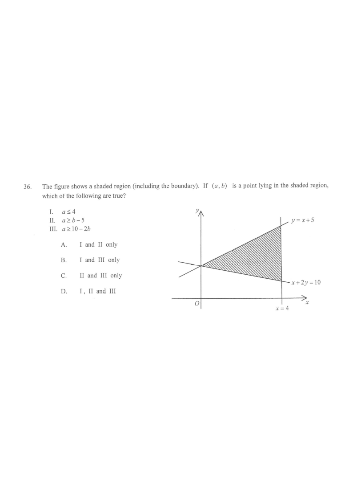

DSE 2015 · 卷二 · 第36題
陰影區域的三個條件
不等式 · 線性規劃
題目
圖中顯示一個陰影區域（包括邊界）。若 $(a,b)$ 為陰影區域內的一點，下列何者正確？
I.
$a \le 4$
II.
$a \ge b-5$
III.
$a \ge 10-2b$
A
只有 I 及 II
B
只有 I 及 III
C
只有 II 及 III
D
I、II 及 III

圖：陰影區域及其三條邊界
題解
第 1 步
讀出三條邊界線
邊界寫成等式
\(x=4,\qquad y=x+5,\qquad x+2y=10\)
把每個不等式的「$\le$、$\ge$」換成「$=$」，就是圍成區域的直線。
三條線兩兩相交，圍成一個三角形，三個頂點為 \[(4,\,9),\qquad (4,\,3),\qquad (0,\,5).\] 例如 $x=4$ 與 $y=x+5$ 交於 $(4,9)$；$x=4$ 與 $x+2y=10$ 交於 $(4,3)$； $y=x+5$ 與 $x+2y=10$ 交於 $(0,5)$。
第 2 步
取區域內一點判斷不等式方向
代入檢驗
\((a,b)=(2,\,4)\in\) 陰影區域
用一個明顯在區域內的點，就能定出每個不等式的方向。
取 $(2,4)$： I. $a=2\le 4$ ✓，方向為 $a\le 4$（區域在 $x=4$ 的左邊）。
II. $b=4$，$a+5=7$，即 $b\le a+5$，改寫成 $a\ge b-5$ ✓。
III. $a+2b=2+8=10$，即 $a+2b\ge 10$，改寫成 $a\ge 10-2b$ ✓。
第 3 步
用三個頂點覆核
線性函數的極值在頂點
\(a+2b\ \text{在頂點取最小／最大值}\)
線性不等式的成立範圍由頂點決定，逐個頂點檢查最穩妥。
頂點
I. $a\le4$
II. $a\ge b-5$
III. $a\ge 10-2b$
$(4,9)$
$4\le4$ ✓
$4\ge4$ ✓
$4\ge-8$ ✓
$(4,3)$
$4\le4$ ✓
$4\ge-2$ ✓
$4\ge4$ ✓
$(0,5)$
$0\le4$ ✓
$0\ge0$ ✓
$0\ge0$ ✓
三個條件在三個頂點都成立，故 I、II、III 全部正確，答案為
D
。
答案
D
（I、II 及 III）
練習
同類新題
題目.
陰影區域由 $x\ge 0$、$y\ge 0$ 及 $x+y\le 6$ 圍成（包括邊界）。若 $(a,b)$ 為區域內一點，下列何者正確？
I. $a\le 6$ II. $b\le 6$ III. $a+b\le 6$
A
只有 I 及 II
B
只有 I 及 III
C
只有 II 及 III
D
I、II 及 III
顯示題解
第 1 步.
區域的頂點為 $(0,0)$、$(6,0)$、$(0,6)$。
第 2 步.
因 $b\ge 0$，由 $a+b\le 6$ 得 $a\le 6-b\le 6$，故 I 成立；同理 II 成立。
第 3 步.
III 就是邊界本身，當然成立。答案
D
。
答案：
D
（I、II 及 III）
‹ 上一題
目錄
下一題 ›